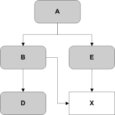

For more details of the mechanisms for loading a M3G compliant file, please refer to the documentation for the Loader class.
Note that only normal numeric values and positive 0 can be stored. Special values such as denormals, infinities, NaNs, negative 0, and indefinite values are disallowed and must be treated as errors.
Float32 x;
Float32 y;
Float32 z;
4 5 6 7
8 9 10 11
12 13 14 15Float32 elements[16]; Byte red;
Byte green;
Byte blue;Byte red;
Byte green;
Byte blue;
Byte alpha;UInt32 index; UInt32 count;
Type arrayValue[0];
Type arrayValue[1];
...etc.Type arrayValue[0];
Type arrayValue[1];
...etc.
The reason for having different sections is that some of the objects, such as the mesh objects, should be compressed to reduce file size, whereas other objects, such as the header object, should not be compressed. The header object must be kept uncompressed since it should be easy to read quickly.
File Identifier Section 0 File Header Object Section 1 External Reference Objects Section 2 Scene Objects Section 3 Scene Objects ... ... Section n Scene Objects
The first section, Section 0, must be present, must be uncompressed and must contain only the header object. This object contains information about the file as a whole, and is discussed in detail in Section 10.1.
If there are external references in the file, then these must all appear in a single section immediately following the header section. This section may be compressed or uncompressed. External references allow scenes to be built up from a collection of separate files, and are discussed in detail in Section 10.2.
Following these are an unspecified number of sections containing scene objects.
The file must contain the header section, plus at least one other non-empty section (containing at least one object). It is possible to have a file consisting solely of external references, or solely of scene objects.
A file containing no objects at all is not a valid M3G file, and must be treated as an error.
Byte[12] FileIdentifier = { 0xAB, 0x4A, 0x53, 0x52, 0x31, 0x38, 0x34, 0xBB, 0x0D, 0x0A, 0x1A, 0x0A }
This can also be expressed using C-style character definitions as:
Byte[12] FileIdentifier = { '«', 'J', 'S', 'R', '1', '8', '4', '»', '\r', '\n', '\x1A', '\n' }
The rationale behind the choice values in the identifier is based on
the
rationale for the identifier in the PNG specification. This identifier
both identifies the file as a M3G file and provides for immediate
detection
of common file-transfer problems.
In this document, we will talk about "sections that are compressed" and "sections that are uncompressed". In reality, we will mean "sections where the objects are compressed", and "sections where the objects are uncompressed".
Each section has the following structure:
We will now go through the individual parts of the section.Byte CompressionScheme
UInt32 TotalSectionLength
UInt32 UncompressedLength
Byte[TotalSectionLength-13] Objects
UInt32 Checksum
CompressionScheme must be one of the following values:
Example:
0 Uncompressed, Adler32 Checksum 1 ZLib compression, 32 k buffer size, Adler32 Checksum 2...255 Reserved
indicates that the Objects field in the section is compressed using zlib with 32 k buffer size.Byte CompressionScheme = 1;
The values 2...255 are reserved for future releases and are disallowed. A loader that follows the specification must report an error if they are found.
Example:
indicates that this section, including the CompressionScheme, TotalSectionLength, UncompressedLength, Objects and Checksum fields, will be 2056 bytes in length.UInt32 TotalSectionLength = 2056
A value of 0 in this field is legal - the section is simply ignored. However, it is recommended that any process that creates a file should check for 0 length sections and eliminate them to reduce file size.
Example:
Means that in this section, after decompression, the Objects field is 4560 bytes in length.UInt32 UncompressedLength = 4560
The structure of each individual object's data is documented in Section 10 and Section 11.
Example:
On limited devices, we might not be able to afford to load an entire section before interpreting it. Thus the loader may start interpreting the objects before knowing that the section as a whole is correct. However, the checksums are still useful in that we at least know afterwards that there was an otherwise undetected error if the checksums differed.UInt32 Checksum = 0xffe806a3
Even on a system that can afford to load an entire section before loading it, it is possible to have errors in the file. The content creation program can have a defect, the transmission of the file could be error-prone, or the file could have been altered as part of a deliberate attack on the device. Thus it is important that the loader tries to detect errors also in files that have correct checksums.
The loader implementation may decide not to compute (and/or check) the checksum. Thus, a file with erroneous checksums is not guaranteed to be rejected. However, a file with erroneous checksums is not a M3G compliant file and must not pass a strict verification test.
Each object in the file represents one object in the scene graph tree, and is stored in a chunk. The structure of an object chunk is as follows:
Byte ObjectType
UInt32 Length
Byte[Length] Data
The values 0 and 0xFF are special: 0 represents the header object, and 0xFF represents an external reference.
Example:
This means that the current object is a Mesh object (see Section 12).Byte ObjectType = 14
Example:
indicates that the Data field of this object spans 2032 bytes in the (decompressed) file.UInt32 Length = 2032
For instance, if the object just contained a single color, the Data would be a 3 byte long array, where the first byte represents the red component, the second byte the green component, and the third byte the blue component.
Attempts to read off the end of an object's data are disallowed and must be signalled as errors. An example of this would be an object with a reported length of 32 bytes, but which internally specifies an array with 65537 members.
Conversely, the deserialization code for each object may also check that each byte of the data belongs to a valid interpretation. Additional bytes after the end of an object's valid data are disallowed. This condition may be difficult to determine on the target platform, but any file which contains "extra" data in object chunks is not a M3G compliant file and must not pass a strict verification test.
By definition, the root of the tree will be sent last.
Note that cycles are not allowed in the file
format. There is one special case where they are allowed in the run-time scene
graph, namely Node alignment. Before a scene graph containing cyclic
references can be written into a file, the cycles must be broken. This
can be done by inserting dummy target nodes as children of the original
alignment targets. For example, if a leaf node is aligned to the World,
an empty Group with an identity transformation is inserted as a child
of the World, and the alignment redirected to that.
Given a scene graph with no cycles, it is possible to use a "leaves first" strategy for output - start by serializing all the objects that do not reference other objects, and then all the objects that refer to the objects already sent, and so it continues until all objects are sent.
Alternatively, a "depth first" strategy can be used, where each object recursively applies the following procedure, to build up a table of references in the correct order. (It is assumed that the table is initially empty.)
Each object can then be serialized from the reference table in order.BuildReferenceTable:
for each reference in this object,
call BuildReferenceTable on the referred object
if this object is not already in the reference table,
append this object to the reference table.
For example, assume that we have the following tree structure:
One valid ordering of the objects is C D F B E A. This is the ordering that occurs if the "leaves first" method is used. Note that other leaf-first orderings are also valid, for instance F D C E B A.
The "depth-first" method produces valid orderings where interior nodes in the graph may be sent before all the leaves have been sent. An ordering produced by the depth-first method discussed above might be C D B F E A.
The only important thing is that any objects referenced by a particular object are sent before the object itself.
With this flexibility, the ordering of references can be forced by the file creator if this is advantageous. For example, if we wish textures to be sent in a separate section that is uncompressed. Thus, if we have the following tree:

where T1 and T2 are textures, we can send the scene graph using, for instance:
Other orderings are also possible, for instance:
Identifier File Identifier (see Section 5) Section 0 Uncompressed File Header Object Section 1 Uncompressed T1 T2 Section 2 Compressed D B E A
or even (with a naive file creator):
Identifier File Identifier (see Section 5) Section 0 Uncompressed File Header Object Section 1 Uncompressed T1 T2 Section 2 Compressed D E B A
Because multiple root-level objects are allowed in the file format, there is no obvious end point in the data. In order that the loader can determine that the file has ended, the total length of the file is stored in the header. Reading from the file is ended when the total number of bytes is reached. At this point, any objects not yet linked into the scene graph are treated as root-level objects and returned to the application.
Identifier File Identifier (see Section 5) Section 0 Uncompressed File Header Object Section 1 Uncompressed T1 Section 2 Compressed D Section 3 Uncompressed T2 Section 4 Compressed B E A
A reference to an object is serialized as an integer containing its index within the file. The serialization order constraint can be expressed as follows:
For an object with index i, a reference index r within it is only valid if r <= i. Invalid reference indices must be treated as an error.
An object reference must refer to an object of a valid type for the reference involved. For example, the reference from an Appearance object to a Material object must actually refer to a Material object. If the referred object type is incorrect, this must be treated as an error.
For instance, for the following tree of references, where X is a shared object

A possible ordering would be D X B E A. Both the leaves-first and the depth-first algorithms described above will generate valid orderings.
In the case where rewinding the stream is not possible, it is also possible to do subtree loading in just one pass. This is achieved by loading everything up until the root node of the desired subtree, and then letting the garbage collection remove everything that is not referred to by the subtree. However, such an implementation would consume more memory than the two-pass implementation above. In the worst case, this is no different from loading the entire scene. For example, if the file contains a 3D map of the whole world and all you want is a specific house, you may still need to load the entire world and then delete everything but the house, if the house is the last object in the file.
If combinations of values are read that may cause a deferred exception, (e.g. a material and light are both present, but there are no normals specified), then this must not be treated as an error by the Loader. The application must be given the opportunity to take action after loading, in order to avoid these exceptions.
If any kind of error is detected during loading, the required action is for the Loader to abort this download, and that of any pending external references, clear up any temporary data structures, and throw an exception. If this file is being used as an external reference, then this is also treated as an error in the file that is attempting to load it. (This definition is, of course, recursive.)
The practical upshot of this is that any error detected in any of the files that may make up a world being loaded must result in a safe abort of the loading process and the throwing of a single exception to the main application.
It is up to the application what action, if any, is taken in the event of a loading error. Options range from an apologetic alert to the user ("Download failed!"), up through sophisticated error recovery schemes involving alternate file locations, or even different content in extreme cases.
There must be exactly one Header object in a file, and it must be the only object in the first section of the file, which in turn must be uncompressed. Due to its position in the file, it will always be assigned object index 1.Byte[2] VersionNumber
Boolean hasExternalReferences
UInt32 TotalFileSize
UInt32 ApproximateContentSize
String AuthoringField
VersionNumber is a unique version number identifying variants of the file fomat. Only one variant is currently specified: version number 1.0. This must be indicated by VersionNumber = {1, 0}. The first number is major revision number, followed by minor revision.
hasExternalReferences is a boolean that describes whether this file is self-contained or includes URIs for other files, such as textures or geometries. If this is false, the file is self-contained. If it is true, then it indicates that the immediately following section of the file will contain the external reference objects needed to specify these external links. See Section 10.2 for more details.
TotalFileSize is the total size of the file, from the start to the end. It will be used in the loading, so it must be correct. (That is, it is not a hint.) For example, a file of size 6783 would define this field as TotalFileSize = 6783.
ApproximateContentSize contains the total number of bytes required to dowload the entire scene, including external links such as textures and geometry. This is provided as a hint, so that the user can know how much data he/she will pay for before loading the entire scene. The ApproximateContentSize field is also necessary in order to produce a good progress bar during the loading of the scene.
It should be noted that this information is only a hint. For instance, the file sizes of the objects that this file is linked to might have changed. Due to this, it is called "approximate" content size. Note that ApproximateContentSize should be equal to TotalFileSize if ExternalFiles is false.
For example, a file of 6083 bytes, with an external reference to another file of 10700 bytes would set ApproximateContentSize = 16783.
AuthoringField consists of a single nul-terminated UTF-8 string. The content of the string is not defined, and may include any information that the authoring environment wishes to place into it. Its most common purpose is mainly to make it possible to put a copyright note on the file, for example: AuthoringField = "Blast4Fun (C) 2003 Extreme Games Inc."
Note that if the string just contains numbers and letters from the English alphabet, the UTF-8 encoding will be the same as ASCII encoding.
Instead of storing an object in-place, it is possible to have an external reference, in the form of a URI. This is stored in the object data as a single, nul-terminated UTF-8 string.String URI
Relative URIs are relative to the file in which they are found, as usual. For example, a URI of "http://www.gamesforfun.com/objs/redcar.m3g", indicates another file in the M3G file format, at an absolute address, and "bluecartexture.png" indicates a PNG file in the same location as the current file.
If an external reference cannot be loaded, this will result in an error, causing the parent file to be "unloadable".
Loops of external references (e.g. file A references file B which in turn references file A again) are illegal and will result in a loading error.
The loader must only indicate that the loading of a file is complete when all external references within it have also been successfully loaded and the references type checked.
External references may appear only within their own section within the file. If present, this appears immediately after the file header section. It may be compressed or uncompressed.
In order to facilitate type checking of external references, loading of the externally referenced file must complete before reading any objects which could refer to it. This is one of the main reasons for ensuring that external references are in their own section, which occurs before sections containing objects of other types. For example, if the external reference is referred to as if it were an Appearance object, then the check that it is indeed an Appearance can occur only after loading the referred file.
External reference loading must support both M3G and PNG file types in order to satisfy the specification. An external reference to any other type of file must be treated as an error. To stress the point, even if a particular format (e.g., JPEG) is otherwise supported by the Loader, it must still reject any M3G files that reference JPEG images.
For M3G format files, the external reference must be able to load another M3G format file containing a single root-level object. If more than one root-level object is defined, then the first root-level object will be used, and the other objects and their descendants discarded.
For PNG format files, the external reference must be able to reference a valid PNG file, in which case the object created is a single instance of Image2D.
In all cases, once loading completes, the single root-level object loaded from the file effectively replaces the external reference object in the object index table. References to that index will then nominate the root-level object.
Classes without a serialized form (e.g. Graphics3D) are shown here for completeness, but are indicated as "not a serializable class".
Detailed information about each field is not given - it should be assumed that the data have the same meanings as those assigned in the API. Where data is serialized in a form which is different from the way it is specified in the API, this alternate form is documented here.
Any values which would be invalid as arguments to the corresponding methods in the API are also invalid in the file and must be reported as errors. For example, a negative value in the light attenuation fields is disallowed by the API and is therefore also disallowed in the file format.
Float32 speed;
Float32 weight;
Int32 activeIntervalStart;
Int32 activeIntervalEnd;
Float32 referenceSequenceTime;
Int32 referenceWorldTime;
The propertyID field must hold a valid enumerated value, as specified in the class definition. Other values must be treated as errors.ObjectIndex keyframeSequence;
ObjectIndex animationController;
UInt32 propertyID;
These are simply references to each of the objects aggregated together to form an appearance.Byte layer;
ObjectIndex compositingMode;
ObjectIndex fog;
ObjectIndex polygonMode;
ObjectIndex material;
ObjectIndex[] textures;
There are as many texture objects in the textures array as there are active texture units for this appearance. The texture units are loaded sequentially from unit 0. If the implementation supports more texture units than are specified, these are left in their default, inactive state, with a null texture.
If more textures are specified than are supported by the implementation, then this must be treated as an error, as it would be in the API. The application can then decide on an appropriate course of action to handle this case.
The backgroundImageModeX and backgroundImageModeY fields must each hold a valid enumerated value, as specified in the class definition. Other values must be treated as errors.ColorRGBA backgroundColor;
ObjectIndex backgroundImage;
Byte backgroundImageModeX;
Byte backgroundImageModeY;
Int32 cropX;
Int32 cropY;
Int32 cropWidth;
Int32 cropHeight;
Boolean depthClearEnabled;
Boolean colorClearEnabled;
The projectionType field must hold a valid enumerated value, as specified in the class definition. Other values must be treated as errors.Byte projectionType;
IF projectionType==GENERIC, THEN
Matrix projectionMatrix;
ELSE
Float32 fovy;
Float32 AspectRatio;
Float32 near;
Float32 far;
END
The blending field must hold a valid enumerated value, as specified in the class definition. Other values must be treated as errors.Boolean depthTestEnabled;
Boolean depthWriteEnabled;
Boolean colorWriteEnabled;
Boolean alphaWriteEnabled;
Byte blending;
Byte alphaThreshold;
Float32 depthOffsetFactor;
Float32 depthOffsetUnits;
The alphaThreshold field is stored as a byte to save space. It is mapped so that 0x00 is equivalent to 0.0 (completely transparent), and 0xFF is equivalent to 1.0 (completely opaque).
The mode field must hold a valid enumerated value, as specified in the class definition. Other values must be treated as errors.ColorRGB color;
Byte mode;
IF mode==EXPONENTIAL, THEN
Float32 density;
ELSE IF mode==LINEAR, THEN
Float32 near;
Float32 far;
END
ObjectIndex[] children;
The format field must hold a valid enumerated value, as specified in the class definition. Other values must be treated as errors.Byte format;END
Boolean isMutable;
UInt32 width;
UInt32 height;
IF isMutable==false, THEN
Byte[] palette;
Byte[] pixels;
For a palettised format, the pixels array contains a single palette index per pixel, and the palette array will contain up to 256 entries, each consisting of a pixel specifier appropriate to the format chosen.
For a non-palettised format, the palette array will be empty, and the pixels array contains a pixel specifier appropriate to the format chosen.
In a pixel specifier, each byte is scaled such that 0 represents the value 0.0 and 255 represents the value 1.0. The different formats require different data to be serialized, as follows:
The interpolation and repeatMode fields must each hold a valid enumerated value, as specified in the class definition. Other values must be treated as errors.Byte interpolation;
Byte repeatMode;
Byte encoding;
UInt32 duration;
UInt32 validRangeFirst;
UInt32 validRangeLast;
UInt32 componentCount;
UInt32 keyframeCount;
IF encoding == 0
FOR each key frame...
UInt32 time;
Float32[componentCount] vectorValue;
END
ELSE IF encoding == 1
Float32[componentCount] vectorBias;
Float32[componentCount] vectorScale;
FOR each key frame...
UInt32 time;
Byte[componentCount] vectorValue;
END
ELSE IF encoding == 2
Float32[componentCount] vectorBias;
Float32[componentCount] vectorScale;
FOR each key frame...
UInt32 time;
UInt16[componentCount] vectorValue;
END
END
All of the vectorValue arrays are the same size, so a separate count is stored outside the individual keyframe's data rather than with each array.
The encoding field indicates the encoding scheme to be used for the keyframe data. Only the nominated values above are allowed. Other values must be treated as errors.
The mode field must hold a valid enumerated value, as specified in the class definition. Other values must be treated as errors.Float32 attenuationConstant;
Float32 attenuationLinear;
Float32 attenuationQuadratic;
ColorRGB color;
Byte mode;
Float32 intensity;
Float32 spotAngle;
Float32 spotExponent;
ColorRGB ambientColor;
ColorRGBA diffuseColor;
ColorRGB emissiveColor;
ColorRGB specularColor;
Float32 shininess;
Boolean vertexColorTrackingEnabled;
ObjectIndex vertexBuffer;
UInt32 submeshCount;
FOR each submesh...
ObjectIndex indexBuffer;
ObjectIndex appearance;
END
UInt32 morphTargetCount;
FOR each target buffer...
ObjectIndex morphTarget;
Float32 initialWeight;
END
The zTarget and yTarget fields must each hold a valid enumerated value, as specified in the class definition. Other values must be treated as errors.Boolean enableRendering;
Boolean enablePicking;
Byte alphaFactor;
UInt32 scope;
Boolean hasAlignment;
IF hasAlignment==TRUE, THEN
Byte zTarget;
Byte yTarget;
ObjectIndex zReference;
ObjectIndex yReference;
END
The alphaFactor field is stored as a byte to save space. It is mapped so that 0x00 is equivalent to 0.0 (fully transparent), and 255 is equivalent to 1.0 (fully opaque).
If the hasAlignment field is false, the omitted fields are initialized to their default values.
The userID field may be any value.UInt32 userID;
ObjectIndex[] animationTracks;
UInt32 userParameterCount;
FOR each user parameter...
UInt32 parameterID;
Byte[] parameterValue;
END
The user parameter data contains enough data to create a java.util.Hashtable object. This contains key/value pairs, with the key being the parameterID, and the value being the parameterValue byte array. The meanings of the IDs, and the contents of the byte arrays, are defined by the application and may have any value.
The behaviour of the java.util.Hashtable class does not allow multiple objects with the same key. Therefore, duplicate parameterID values are not allowed and must be reported as an error.
If an object has no user parameters, the userParameterCount field must be 0. In this case, the user object in the resulting Object3D instance must be set to null, rather than indicating a Hashtable object with no content. The Hashtable containing the parameters, if it exists, can be retrieved through the API using the getUserObject method.
The culling, shading and winding fields must each hold a valid enumerated value, as specified in the class definition. Other values must be treated as errors.Byte culling;
Byte shading;
Byte winding;
Boolean twoSidedLightingEnabled;
Boolean localCameraLightingEnabled;
Boolean perspectiveCorrectionEnabled;
ObjectIndex skeleton;
UInt32 transformReferenceCount;
FOR each bone reference...
ObjectIndex transformNode;
UInt32 firstVertex;
UInt32 vertexCount;
Int32 weight;
END
ObjectIndex image;
ObjectIndex appearance;
Boolean isScaled;
Int32 cropX;
Int32 cropY;
Int32 cropWidth;
Int32 cropHeight;
The levelFilter, imageFilter, wrappingS, wrappingT, and blending fields must each hold a valid enumerated value, as specified in the class definition. Other values must be treated as errors.ObjectIndex image;
ColorRGB blendColor;
Byte blending;
Byte wrappingS;
Byte wrappingT;
Byte levelFilter;
Byte imageFilter;
If either hasComponentTransform or hasGeneralTransform is false, the omitted fields will be initialized to their default values (equivalent to an identity transform in both cases).Boolean hasComponentTransform;
IF hasComponentTransform==TRUE, THEN
Vector3D translation;
Vector3D scale;
Float32 orientationAngle;
Vector3D orientationAxis;
END
Boolean hasGeneralTransform;
IF hasGeneralTransform==TRUE, THEN
Matrix transform;
END
Bit 7 of the encoding field is equivalent to the explicit property on the index buffer, and will be 1 if the index buffer was constructed with explicit indices, or 0 if constructed with implicit indices. The other bits indicate the width of each index field. 0 indicates that the "raw" integer values are written, 1 indicates that a single byte will suffice, and 2 indicates that a 16 bit integer is sufficient to hold all the given index values. Values for the encoding field other than those explicitly nominated above are not allowed and must be treated as errors.Byte encoding;
IF encoding == 0, THEN
UInt32 startIndex;
ELSE IF encoding == 1, THEN
Byte startIndex;
ELSE IF encoding == 2, THEN
UInt16 startIndex;
ELSE IF encoding == 128, THEN
UInt32[] indices;
ELSE IF encoding == 129, THEN
Byte[] indices;
ELSE IF encoding == 130, THEN
UInt16[] indices;
END
UInt32[] stripLengths;
The componentSize and componentCount fields must each hold a valid value, as specified in the constructor definition. Other values must be treated as errors.Byte componentSize;
Byte componentCount;
Byte encoding;
UInt16 vertexCount;
FOR each vertex...
IF componentSize==1, THEN
IF encoding==0, THEN
Byte[componentCount] components;
ELSE IF encoding==1, THEN
Byte[componentCount] componentDeltas;
END
ELSE
IF encoding==0, THEN
Int16[componentCount] components;
ELSE IF encoding==1, THEN
Int16[componentCount] componentDeltas;
END
END
END
The encoding field indicates the encoding scheme to be used for the keyframe data. Only the nominated values above are allowed. Other values must be treated as errors.
If a texture coordinate array has only two components, the corresponding texCoordBias[2] element must be 0.0.ColorRGBA defaultColor;
ObjectIndex positions;
Float32[3] positionBias;
Float32 positionScale;
ObjectIndex normals;
ObjectIndex colors;
UInt32 texcoordArrayCount;
FOR each texture coordinate array...
ObjectIndex texCoords;
Float32[3] texCoordBias;
Float32 texCoordScale;
END
Null texture coordinate arrays are never serialized, regardless of their position. A single texture coordinate array will therefore always be serialized as belonging to texturing unit 0, regardless of its original unit it was assigned to.
There are as many references in the texture coordinates array as there are active texture units for this geometry. The texture coordinate references are loaded sequentially from texture unit 0. If the implementation supports more texture units than are specified, these are left in their default, inactive state, with a null texture coordinate reference and an undefined bias and scale.
If more texture coordinate references are specified than are supported by the implementation, then this must be treated as an error, as it would be in the API. The application can then decide on an appropriate course of action to handle this case.
ObjectIndex activeCamera;
ObjectIndex background;
Note that Object3D, Transformable, Node, and IndexBuffer are abstract classes and cannot be instantiated directly. They therefore do not appear in this list.
ObjectType value Object Type 00 Header Object 01 AnimationController 02 AnimationTrack 03 Appearance 04 Background 05 Camera 06 CompositingMode 07 Fog 08 PolygonMode 09 Group 10 Image2D 11 TriangleStripArray 12 Light 13 Material 14 Mesh 15 MorphingMesh 16 SkinnedMesh 17 Texture2D 18 Sprite 19 KeyframeSequence 20 VertexArray 21 VertexBuffer 22 World 23 ... 254 Reserved for use in future versions of the file format 255 External Reference